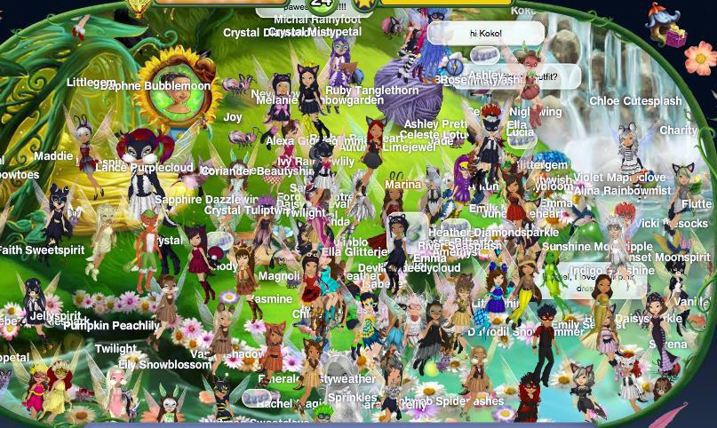
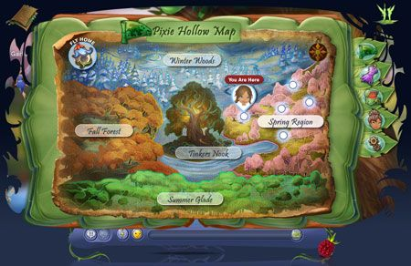
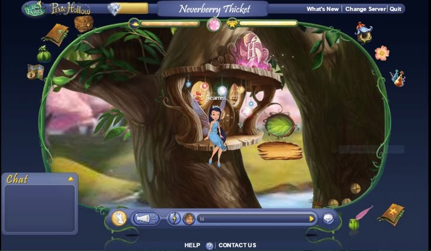

Okay so this is where all of the sad and dead games are, you know... like pixie hollow and stuff :[ it's really tragic :////
Club Penguin: October 24, 2005 - March 30, 2017
I remember playing this one soooo much!! I literally BEGGED my mom to get me a membership lol XD it was like six bucks a month so i had to do sooo many chores. I spent so many hours on Cart surfer. I had a cute red penguin with a top hat and I got so many coins
to make my igloo into a mansion. I remember that eveyrone online kept thinking I was a boy :P not that I cared lol. The game was super funnn though. For a super long time I had to do the ultra safe chat mode which suckked. I wanted to
roleplay as my penguin and say what he would say... but it's whatever y'know :/// then they replaced it with the SUPER LAME spinoff that was club penguin island! It only lasted 13 months!
Pixie Hollow
★ October 28, 2008 - The first Tinkerbell movie comes out. Around the same time, Disney and Schell Games released the Pixie Hollow video game.
★ September 19, 2013 - Pixie Hollow shut down. Since then, many spin-offs of the game have been created such as We the Pixies.
★ Why was it shut down? - On September 19, 2013, Pixie Hollow was shut down alongside many other Disney online games as Disney shifted its focus and game budget to its mobile and console games, the most notable of which being Disney Infinity which was released on August 18, 2013.



Cartoon Network Games
★ Early 2000 s - Cartoon Network Interactive starts releasing online games based on Cartoon Network’s animated shows alongside console and handheld games.
★ Adobe Flash - As more people are introduced to network games, Cartoon Network is able to launch more games through the use of Flash.
★ 2014 - Cartoon Network Interactive rebrands to Cartoon Network Games.
★ August 8, 2024 - Cartoon Network Games’ official website is shut down.
★ Are they still accessible today? - Though no longer available by the official Cartoon Network Games, you can still play many of its games through other websites and archives such as the online Web Design Museum.